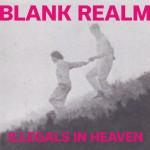
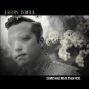

Top Albums of 2015 (Bubbling Under)
Considering the deluge of albums that come out every year, there's always a select, praise-worthy few that just don't get as much attention as they truly deserve. Here, we honor some contenders that didn't quite make our official year-end list, but should also be given a chance.
. . .
Blank Realm
Illegals in Heaven
(Fire)
A more easy-going and accessible offering than last year's excellent Grassed Inn (a respectable number 45 on 2014's Top 50 Albums list), Illegals in Heaven is no less vital. Lead single River of Longing was one of the year's stand-out pop songs, which is something I never imagined I'd be writing about Blank Realm twelve months ago. If the band continues to move in this direction without sacrificing its consistency, it'll be impossible to continue to overlook Blank Realm, as our team unfortunately has this year. David Coleman
Donnie Trumpet & the Social Experiment
Surf
(self-released)
Where Kendrick Lamar and Vince Staples provided powerful, timely commentaries on race in America, Chance the Rapper found inward solace in friends, family and music. Calling it a retreat ignores the boldness of Chance’s joy, as well as the stunning arrangements and performances that bring it to life. Brad Hanford
EZTV
Calling Out
(Captured Tracks)
Power pop refuses to die. For EZTV, what's palpable and vital about the form is not the chord changes but the open terrain for expression. The songs have hooks galore and the playing is impeccable, with nothing hidden under the mix, an honesty that would make other artists squirm. Angel Aguilar
Floating Points
Elaenia
(Luaka Bop)
The refreshing, quietly ambitious debut LP from Sam Shepherd prides itself on chameleonic drifts of analog and digital sounds that are as indebted to the ambient techno of Four Tet and Biosphere as much the post-rock playfulness of Tortoise and jazzy, ethereal moments of a late Talk Talk meditation. While Shepherd is oft-known as a producer and DJ, the enveloping grooves of the three-part Silhouettes lure the composer out from under. Grant Phipps
 Foals
Foals
What Went Down
(Warner Bros.)
What Went Down is Foals magnified. From the battering title track to the sparkling guitar of Lonely Hunter, from the infectious Mountain At My Gates to the industrial dance clang of Snake Oil, this record is a furious deluge that will sweep you away. You'll be glad it did. Joe Marvilli
 High on Fire
High on Fire
Luminiferous
(Entertainment One Music)
Matt Pike is at it again with Luminiferous, coming across as a committed lieutenant who is teaching hard rock disciples both young and old how it’s done. There’s hardly a dull moment in these breakneck, steely fifty-minutes, peppered with mystical lyrical concepts that further underline Pike’s idiosyncratic lens. That High on Fire continue to be as resilient after 17 years proves they still stand tall in metal’s pantheon. Juan Edgardo Rodríguez
Jason Isbell
Something More Than Free
(Southeastern Records)
About once a year an exceptional album comes along that suspends my rage toward Nashville for producing generally (and genuinely) awful country music. This year’s release, by Jason Isbell, explores themes of addiction, repentance, struggle, love, loss, redemption, and joy in uniquely human terms. Put simply, it’s everything the genre should be. Benjamin Jones
Kamasi Washington
The Epic
(Brainfeeder)
Jazz saxophonist Kamasi Washington’s The Epic is a three-LP big-band endeavor, one that had obviously taken its namesake to heart through size and scope. As a contributor to performers like Kendrick Lamar and Flying Lotus, Washington’s notoriety as a hip-hop presence enables him to make jazz accessible to mainstream audiences. Sean Caldwell
Lianne Le Havas
Blood
(Nonesuch)
On Blood, La Havas is sufficiently buoyed by the success of her first record to explore the further reaches of her sound. The album opens with over thirty seconds of swirling strings and wordless vocals, and this confidence permeates throughout. La Havas’ sweet voice elevates Blood into something truly memorable. Joe Rivers
Mac Demarco
Another One
(Captured Tracks)
Despite its running time of just 23 minutes, it’s clear right from the first listen that eight-track mini-album Another One is far from a compilation of throwaway ideas; these are complete, creative, achingly charming songs, crafted by one of the most talented songwriters around. So not just "Another One”, then. Craig Stevens
Miguel
Wildheart
(RCA)
Those unfamiliar with Miguel might be put off by either: his frank expression of sexuality; his psychedelic blend of R&B, electronics, and rock; his postured masculinity; or possibly all three. But they would be hard-pressed to deny the mastery of his production and songwriting, and his boldness in crossing melodic styles on Wildheart. Joseph Moore
 Ought
Ought
Sun Coming Out
(Constellation)
There’s an absorbing energy about Sun Coming Down that makes it a thoroughly compelling listen. It’s intense, but absolutely relaxed about being so. Guitars traipse and squelch, and Tim Darcy’s vocals encapsulate in their frankness. Arty, post-punk guitar music executed exquisitely. Carl Purvis
 Sleaford Mods
Sleaford Mods
Key Markets
(Harbinger Sound)
Divide & Exit’s follow up saw the Mods drop a surprisingly musical 40 minutes; the bare beats got a bit beefier and Jason Williamson even started singing. The bile was still there, so was the wit, as Sleaford Mods keep protest music alive. James McKenna
Susanne Sundfør
Ten Love Songs
(Warner Music Norway)
Norwegian singer-songwriter Susanne Sundfør bestowed her fifth album with perhaps the most-misleading title since Mogwai’s Happy Songs for Happy People. Initially setting out to make a “pop record”, Sundfør drew on everything from electronica to classical to create possibly the weirdest love songs heard anywhere this year. Mark Davison
. . .
Come back later in the week, as we finally reveal our top 50 albums of 2015!
15 December, 2015 - 04:09 — No Ripcord Staff